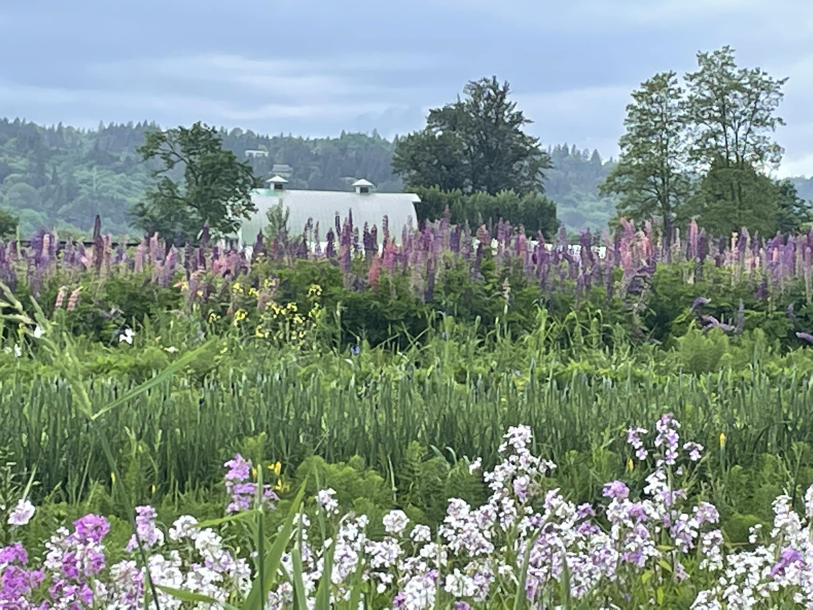
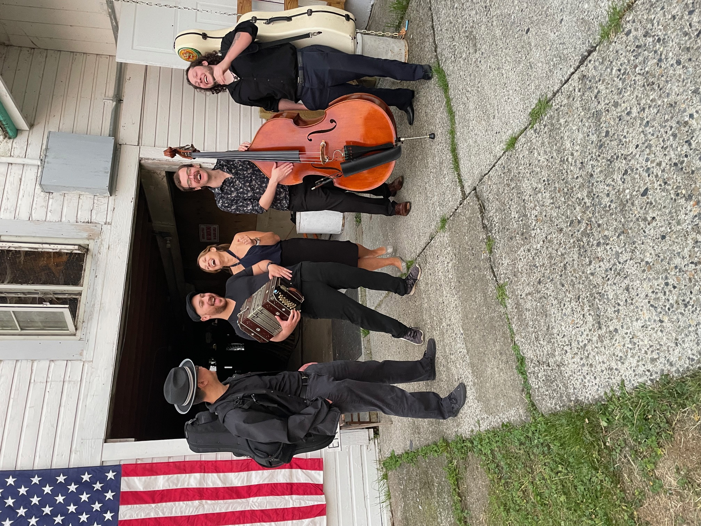
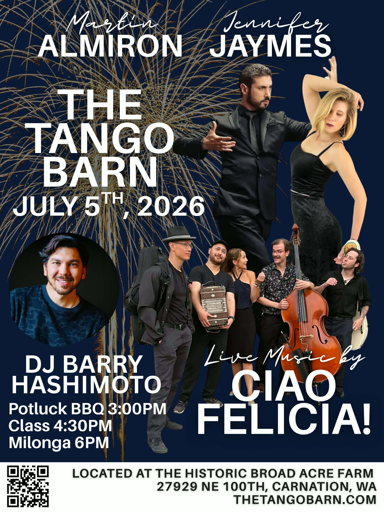
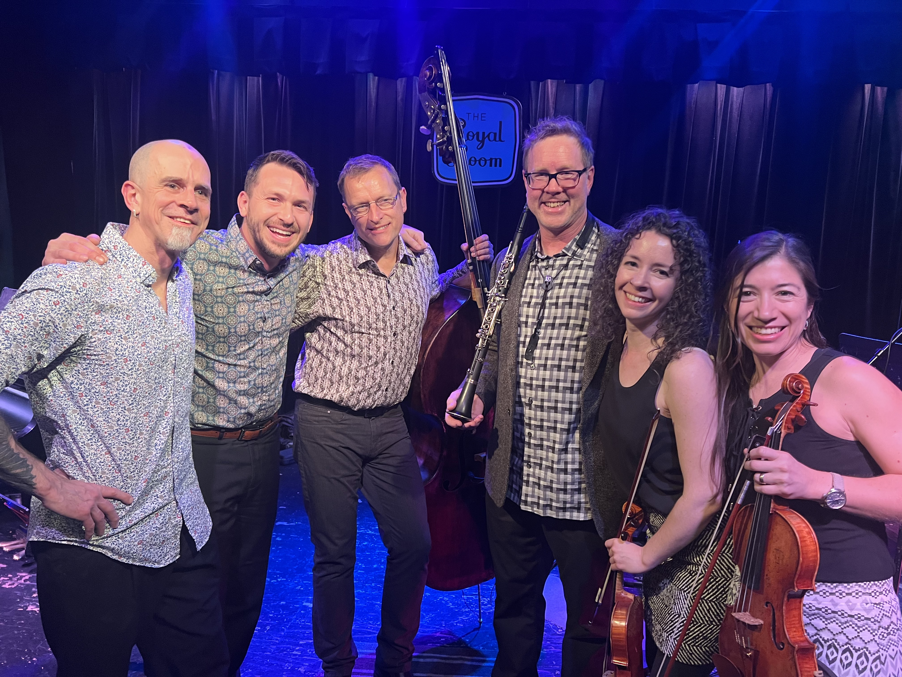
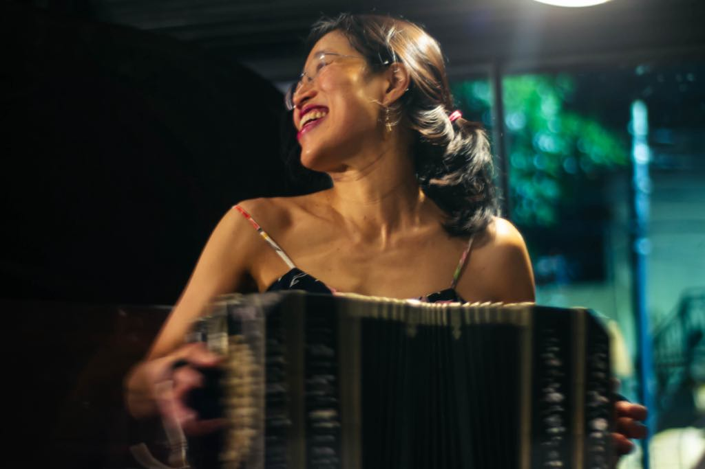
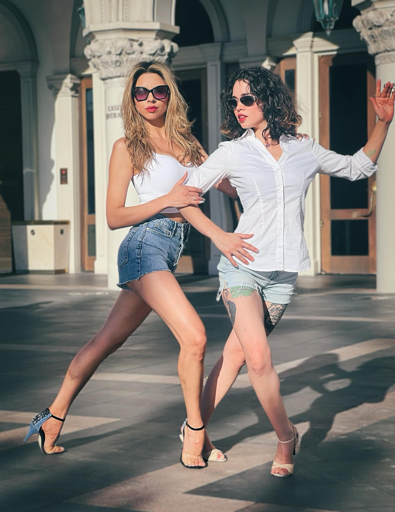
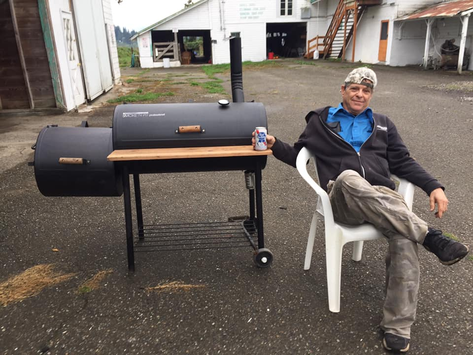
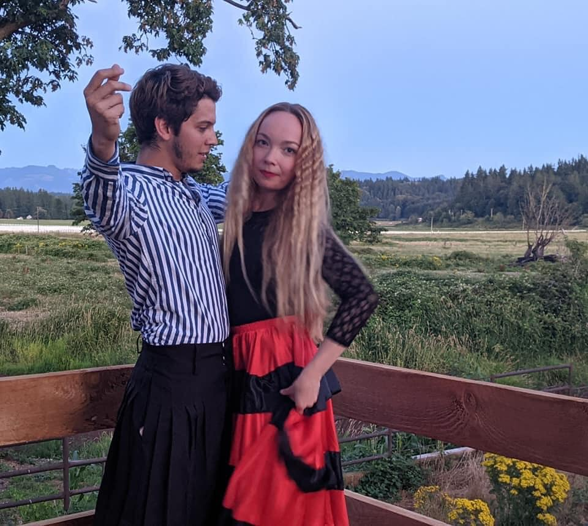
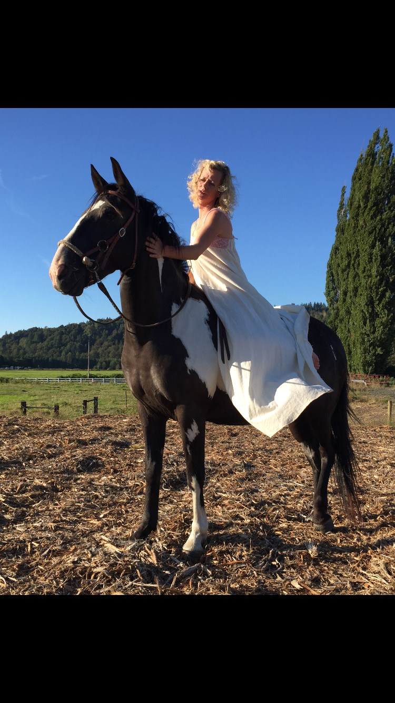
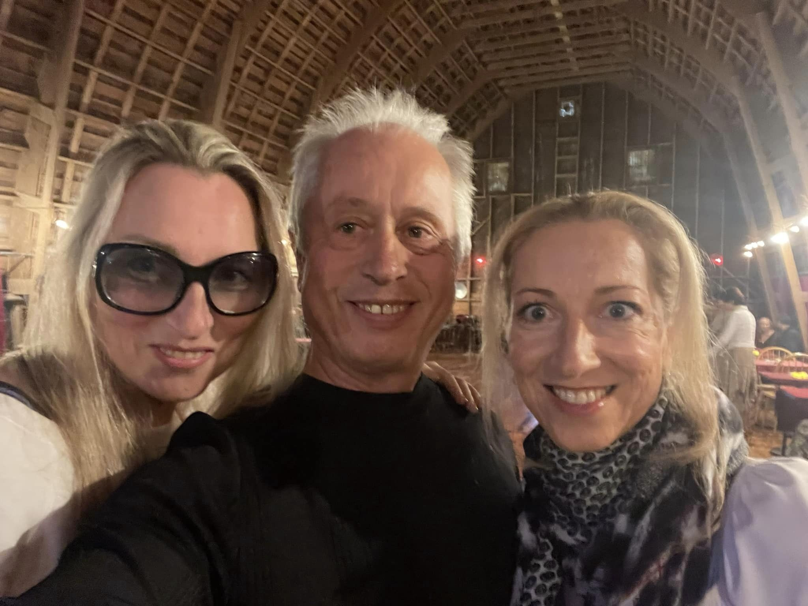

Welcome to the Tango BarnLocated at historic Broad Acre Farm, 27929 NE 100th St, Carnation WAWe have our 2026 Tango Barn live music lineup schedule Tango Barn 2026! We had a great 25th anniversary celebration last year at Broad Acres Farm Tango Barn 2025  * Please donate now to help support our Summer 2026 program! |
|
A magical place where Tango musicians, artists, and dancers come together to socialize, dance, and be our guests |
2026 Tango Barn Schedule





Volunteer Opportunities at the Tango BarnA lot of work goes into putting on a live music Tango performance at the Tango Barn. This includes pre-planning, helping get the ground and venue ready for the event, and activties during the event such as checking poeple in, monitoring the floor, watching the refreshment table, and more. Please reach out to us to talk about the benefits it brings to you as well as us! |
  |
History of the Tango Barn
The Tango Barn is located on the historic
William and Estella Adair Farm
built in 1922 as a 115 acre dairy farm in Carnation, Washington
in the lovely Snoqualmie River Valley. In November 1999, it was purchased by Joseph Hayes and converted into a multi-use farm including
individual garden spots, horse boarding, and producing grass fed free range Wagyu / Kobi beef. It is also a bird watching paradise
where the hawk and the eagle soar, the coyote roam and salmon swim.
The idea for the Tango Barn came from the talented Sara Rose. She had a dream of converting a historic barn into a
place where people could enjoy the rustic beauty of the wooden structure while learning and practicing the art of Argentine Tango.
Joseph began developing this dream with the help and support of his wife Diana Hayes. It took a number of years to
do all the work necessary to make this beautiful barn a place in which we can foster the love for live music and Argetine Tango.
Much of the original floor repair was done by Laurel Wittman. We were at a loss as to how to resolve the gaps in the 100 year old
ship lap floor until Angela Ramsayer came up with the idea of routing the gaps and gluing in splines.
With the help of Angel, Arthur Newmon,
Andrew Walston and Joseph Hayes, we were able to save the original 100 year old floor and
rehabilitate it into the beautiful floor you see below.
Many people helped us along the way including Kristina Ivanova,
Natasha Malteva, Robin Kallsen and Rich Hinrichsen for encouraging us to go forward
with the project, as well as Ben Thomas,
Stephen Brady, Mirta Wymerszberg, Stuart Zobal, Gabriella Condrea,
Winnie Chueng and Hugo Satorre, and the amazing Pablo Inza & Sofia Saborido.
|
  |
The Tango Barn was the brain child of the lovely and talented Sara Rose, and was created by many hours of love and hard work by Joseph and Diana Hayes and